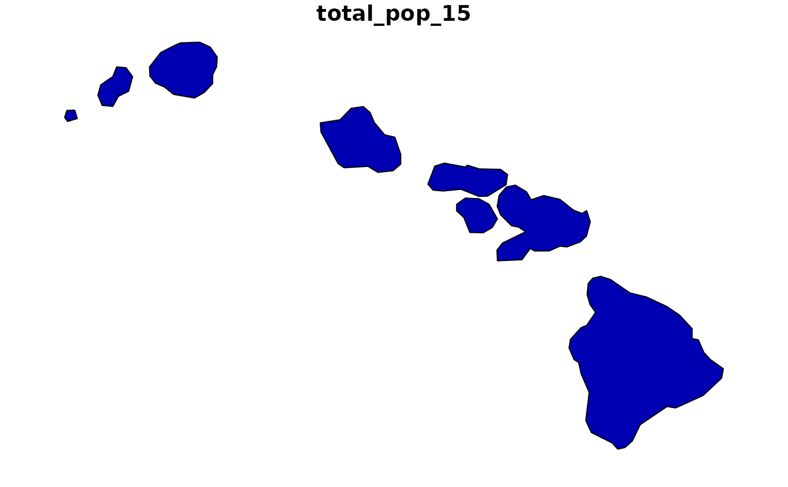

The object loaded is a sf object containing the state of
Hawaii from the US Census Bureau
with a few variables from American Community Survey (ACS)
hawaiiFormal class 'sf' [package "sf"]; the data contains a data.frame with 1 obs. of 7 variables:
GEOID: character vector of geographic identifiers
NAME: character vector of state names
REGION: character vector of region names
AREA: area in square kilometers of units class
total_pop_10: numerical vector of total population in 2010
total_pop_15: numerical vector of total population in 2015
geometry: sfc_MULTIPOLYGON
The object is in projected coordinates using Hawaii Albers Equal Area Conic (ESRI:102007).
See the tigris package: https://cran.r-project.org/package=tigris
if (requireNamespace("sf", quietly = TRUE)) {
library(sf)
data(hawaii)
plot(hawaii["total_pop_15"])
}
